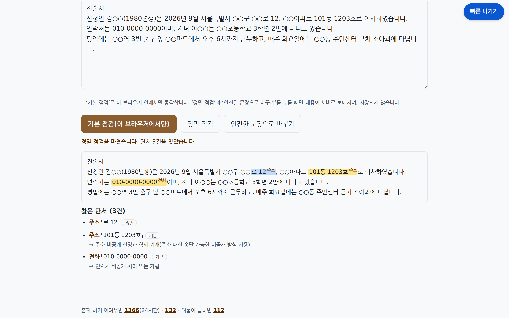
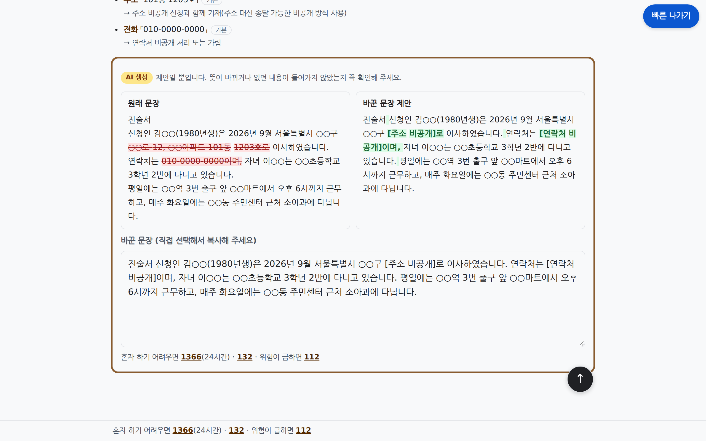

보안 예보
피해자의 새 주소가 새는 경로를 진단하고
막는 제도를 근거와 함께 안내하는 피해자 본인용 AI 자가 점검 도구
EasyPeasy 팀 · 정세영 · 김시현 · 김대웅
github.com/codyssey-EasyPeasy/sumeunjip · 최종 커밋은 제출 파일(EasyPeasy_소스코드.txt) 기준 · 모든 평가 수치는 합성 데이터 기준
피신은 했지만, 주소는 서류를 타고 새어 나갑니다
2026.9 광주 보도
이혼 소장으로 피신 주소가 드러난 뒤 살해. 주소 비공개 신청은 하지 않은 상태
2026.10 대구 보도
잠정조치 결정문 가해자 주소란에 피해자 새 주소가 적혀 전달됨
2025.8 서울 강서 경찰이 스토킹 통보서를 가해자 휴대전화로 오발송 보도 — 셋 다 해킹이 아니라 서류·결정문·통보서로 샘
(+23.1%)
(+39.9%, 2024년 3.2만)
(가정폭력 상담 18~20만)
문제를 겪는 대상
| 1차 사용자 | 스토킹·가정폭력·교제폭력·성폭력 피해자 본인 — 막 이사했거나 소송 중, 법률 비전문가, 기기를 감시당할 수 있음 |
| 2차 사용자 | 피해자의 가족·지인 |
| 다루지 않음 | 다른 사람의 위치를 찾으려는 사람 → 거절 + 보호 제도 안내 |
막는 제도가 있어도 새는 이유
- 신청주의 — 신청해야만 작동, 법원 사전 안내 의무 없음 (민사소송법 제163조 제2항)
- 유형별 공백 — 교부 제한·보호명령은 가정폭력 전용. 비가족 스토킹·교제폭력엔 없음
- 역노출 — 제한을 신청하면 그 사유가 가해자에게 서면 통지 (주민등록법 제29조 제7항 후단 등)
신고 통계: 성평등가족부·경찰청 공동 발표(2026-05-18). 사례: 경인일보·경북매일·YTN 보도, research/2026-10-31-정보조사.md 5절. 열람제한: 서울신문 보도(이후 통계 미확인). 조문: data/laws/ 원문 스냅샷 대조. 84개 밖 미조사 25항목(같은 문서 11절). 원인: 같은 문서 1절. 84·16: data/knowledge.json. 대상 변경: 상담사용 → 피해자 본인(docs/SPEC.md §7)
피해자가 직접 쓰는 '주소 노출 점검표'
이름·주소 없이 상황만 고르거나 말로 적으면, 새 주소가 샐 수 있는 경로와 그 경로를 막는 제도를 근거 조문·신청처·서류·통지 경고와 함께 급한 순서로 보여 줍니다.
안전 확인
방문마다 안전 안내 팝업(다시 보기), 위쪽 긴급 띠 112·1366·132
상황 입력
유형 + 상황 체크, 또는 말로 적기 → AI 미리 선택 → 본인 확인
진단 결과
급한 순서, 카드는 위험 → 도움 먼저, 통지 경고, 인쇄
서류 점검
위치 단서 표시, 안전한 문장 제안
| 핵심 기능 | 하는 일 | AI |
|---|---|---|
| ① 노출 경로 진단 | 피해 유형 4 + 상황 항목 30(묶음별 접힘) → 84개 경로 중 해당하는 것을 급한 순서로, '지금 먼저 할 일' 최대 5건 | 안 씀 (규칙 엔진) |
| ② 막는 제도 안내 | 위험 → 도움 먼저, 근거 조문(시행일)·신청처·서류는 접힘. 통지되는 제도는 확인 체크 뒤에만 신청 방법. 잔여 위험 따로 | 안 씀 |
| ③ 말로 설명하기 | 자유 서술 → 체크 항목 미리 선택. 주입 지시문 제거, 근거 낱말 없는 항목 버림 | 내부 LLM |
| ④ 근거 답 | 지식표·공개 조문만으로 답. 생성 → 문장별 검증 → 1회 재생성 → 원문 발췌 | 내부 LLM + 재순위 |
| ⑤ 서류 점검·다시 쓰기 | 주소·학교·직장·차량·전화 단서 표시(1단계는 브라우저 안에서만), 원문과 정렬되는 안전한 문장 제안 | 규칙 + GLiNER + LLM |
| ⑥ 안전 장치 | 안전 안내 팝업·긴급 띠·하단 도움 줄, 빠른 나가기(버튼·Esc 두 번), 다크 모드, 2단 가드(타인 찾기 거절 + 보호 대안), 입력·브라우저 저장 0 | 규칙 + 임베딩 |
배포본 화면 (합성 입력)

③ AI 가 미리 고른 항목 — 본인 확인 뒤 제출

①② 진단 결과 '지금 먼저 할 일'

② 카드는 위험 먼저, 통지 경고 — 확인 체크 전엔 신청 방법이 가려짐

④ 근거 답 — 'AI 생성 + 문장별 근거 확인'

⑤ 서류 점검 — 단서 색칠과 바꾸는 방법

⑤ 다시 쓰기 — 원래 문장 / 바꾼 문장
공개 모델 4종은 그대로, 판단·검증은 직접 만들었습니다
| 모델 (외부·그대로) | 적용 기능 | 적용 방식 (직접 만든 부분) | 고른 이유 |
|---|---|---|---|
| BAAI/bge-m3 MIT | 조문 검색, 가드 의도 점수 | 노출 가능 조문 131건 임베딩 → 상위 30. 가드는 자체 시드 max-sim 점수를 신호 하나로만(0.16 초과 + 타인 지시어 + 보호 맥락 없음일 때만 거절 근거) | MIT·568M. 우리 보류 세트 Recall@5 0.945 (BM25 0.800) |
| bge-reranker-v2-m3 Apache-2.0 | 재순위, 답 근거 확인 | 30 → 5. 답 문장마다 근거 조각 3개, 0.01 미만이면 '근거 없음' | 0.6B. 법률 용어 1위 0.867→1.000 (일상 말투는 0.733→0.633 하락) |
| gliner_multi-v2.1 Apache-2.0 | 서류 정밀 점검 | 자체 라벨 매핑, 700자 조각 나눔·병합, 정규식 결합 | 학습 없이 라벨 정의(제로샷). 직장·생활권은 약함 |
| Qwen3-8B-AWQ + vLLM Apache-2.0 | 상황 정리·근거 답·다시 쓰기·검증기 | thinking 끔, JSON 스키마 강제 출력. 프롬프트·전후처리·검증 루프 전부 자체. 미세조정 없음 | 표시 의무·사용자 상한 없는 라이선스, 공식 4bit 로 L4 공유(13,948MiB). 대안 A/B 는 안 함 |
자체 알고리즘
- 규칙 진단 엔진 — 84행 결정적 판정, AI 없음, 0.005초
- 2단 가드 — 정규화(NFKC·자모·디코딩 변형) → 규칙·구문 → 임베딩, 5등급, 다턴 결합, 앱·GPU 두 번
- 근거 답 루프 — 생성 → 규칙·재순위·Qwen 검증 → 1회 재생성 → 발췌(12초 예산)
- 공통 출력 가드 — 프롬프트 유출·금지 조문(해시 24,995)·과잉 약속·목록 밖 인용·반복
- 다시 쓰기 정렬 — 새 숫자·이름·장소, 정렬 비율 0.6 미만이면 규칙 치환
런타임 외부 AI API 호출 0
LLM 은 GPU 서버에 직접 띄운 Qwen 하나뿐. 실패해도 다른 LLM 으로 넘기지 않고 체크박스 방식으로 계속. 실행 중 HF_HUB_OFFLINE=1.
우리가 만든 API — 운영: /api/diagnose · search · doccheck · intake · answer · rewrite · flags · features · health / 추론: /embed · /rerank · /ner · /intent · /llm/{intake,answer,rewrite}
직접 만든 것 · 가져다 쓴 것 · 개발에 쓴 AI
직접 만든 것 (wc -l, 11-01)
| 규칙 엔진 | engine.py 203 |
| 지식표 84행 (자체 법령 조사, 근거 224건) | knowledge.json |
| 2단 가드·정규화 | guard.py 1,045 |
| 검증 루프·출력 가드 | verify 582 · llm 693·497 |
| 운영·추론 API | main 508 · server 613 |
| 웹 화면·단서 탐지 | app.js 1,428 · css 824 · detect 126 |
| 평가·시뮬레이터·레드팀 | tools 3,626 + sim 1,946 |
| 자동 시험: 앱 572 passed · GPU 188(실제 torch) / 187+1 skipped(가짜 torch) | tests 3,359 · 1,722 |
그대로 쓴 것
- 모델 4종 — 미세조정 없음
- vLLM · PyTorch · FastAPI 등
- 법령 원문 174건 (법제처)
- 서버 2대·L4·SSL-VPN (주최 측 NCP)
개발에 쓴 AI 서비스엔 없음
- Claude(Claude Code, Opus): 팀원 지시 아래 코딩·조사·문서 보조로 폭넓게. 설명 41건+수정 12건·J28
- DeepSeek-V4.1-Flash: 설명 42/84건 초안, 1차 코드 일부 초안(공개 법령만)
- GLM-5.3-Flash: 평가 때 합성 사용자·공격자 역할만
- 셋 다 런타임 호출 0. 쉬운 말 설명 사람 검수 0/84 → 'AI 생성·검수 전'
모든 수치는 합성 데이터 기준. 남은 문제: 다턴 시뮬레이션 자기 보호 질문 오거절 18건/14대화(notice_calibration_summary.md). 근거 답 근거 없는 문장 3.6%→0 은 같은 검증기로 잰 값(독립 판정 아님). 레드팀 판정기 집계 3/112(2.7%)는 '찾지 못함'을 거절로 센 값이라 문서 정의대로 다시 셈. 대책 전후는 같은 세트라 개선 주장 안 함, 재검토는 Claude, 조회 방법 검출은 정규식(재현율 미측정).
Python 3.12 · FastAPI · vLLM, GPU 1장 위의 자체 호스팅
| 계층 | 기술 · 버전 |
|---|---|
| 언어 | Python 3.12.3 · JavaScript(바닐라) · HTML/CSS |
| 패키지 | uv (uv.lock, 개발 기기 0.12.7) |
| 운영 API | FastAPI 0.162.0 · Starlette 1.10.0 · Uvicorn 0.54.0 · Pydantic 2.14.2 · HTTPX 0.28.1 |
| 추론 API | sentence-transformers 6.2.0 · GLiNER 0.2.29 · PyTorch 2.15.0 · transformers 5.16.1 · NumPy 2.5.4 |
| LLM 서빙 | vLLM 0.32.0 — JSON 스키마 강제, 요청·생성 로그 끔 |
| 모델 | bge-m3 · bge-reranker-v2-m3 · gliner_multi-v2.1 · Qwen3-8B-AWQ |
| 웹 | 프레임워크 없음, 외부 CDN·쿠키·localStorage 없음 |
| 시험·평가 | pytest 9.2.0 · Node.js 22 · 자체 시뮬레이터 · Playwright(캡처·시연 녹화) · FFmpeg 7.0.2 |
| 실행 | 셸 스크립트 + PID 파일 (Docker·systemd 안 씀) |
인프라 — 주최 측 제공 NCP
운영 서버 Xeon Gold 5220 2vCPU · 7.8GiB — 127.0.0.1:8080
GPU 서버 Xeon Silver 4416+ 4vCPU · 47GiB · NVIDIA L4 — :8000 추론 API, 127.0.0.1:8001 vLLM
GPU 메모리 13,948 + 5,686 = 19,648 / 23,034MiB (23:33)
접근: SSL-VPN → ssh 터널 (시연용, TLS 없음). 앱·웹 993db4f, GPU 642e5e1. 11-01 13:00 서버 삭제
응답 시간 (서버 안 중앙값, 합성 5회)
진단 0.005s · 검색 0.945s · 상황 정리 1.827s · 근거 답 5.745s · 다시 쓰기 2.366s
부하 실측(동시 1·2·4·8): 동시 2에서 L4 1장 시간당 약 200세션, 세션당 약 9.7원·2.2만 토큰. 동시 4부터 발췌 답 14%로 품질이 먼저 떨어짐. 순차 100회 근거 답 p95 9.94s
docs/COST_LATENCY.md §3-3 · docs/EVIDENCE.md 9절
세 사람, 세 영역 — 담당 업무와 기여 내용
| 이름 · 역할 | 담당 업무 | 기여 내용 (저장소 산출물) |
|---|---|---|
| 정세영 백엔드 및 AI | 운영·추론 API 설계와 구현, 내부 LLM 도입, 입력·출력 가드와 답 검증 루프, 서버 배포·운영 | 규칙 진단 엔진 app/engine.py · 2단 입력 가드 app/guard.py · 조문 검색·BM25 대체 · 추론 서버 /embed·/rerank·/ner·/intent·/llm/* · 생성→검증→재생성→발췌 루프·출력 가드 gpu/verify.py · Qwen3-8B·vLLM 서빙 · NCP 2대 배포, L4 메모리 19,648/23,034MiB · GPU API 토큰·HF 오프라인 |
| 김시현 기획 및 법령조사 프런트엔드 | 문제 정의·목표 사용자 설정, 주소 노출 경로 법령 조사, 지식표 기획, 웹 화면과 사용자 흐름, 화면 개선(PR #2) | 정보조사 research/…정보조사.md — 6개 영역 84개 노출 경로, 막는 제도 없는 16개, 통지 12개 · 지식표 84행 기획 data/knowledge.json · 근거 조문 174건 범위 선정 · 사용자 흐름(안전 확인 → 입력 → 진단 → 서류 점검), 피해자 본인 사용 전환 · 웹 화면 web/ — 빠른 나가기, 통지 확인 잠금, 모바일 · PR #2: 방문마다 안전 안내 팝업·다시 보기, 긴급 띠 112·1366·132, 하단 도움 줄, 묶음 접기, 다크 모드, 카드 '위험 → 도움', 검색 원문 먼저, 파비콘 제작 |
| 김대웅 평가·보안 PT 자료 제작 | 합성 평가 데이터·평가 하네스, 다턴 시뮬레이터, 레드팀·가드 평가, 시험 계획·결과, 발표 자료 | 합성 평가 세트 data/eval/(시나리오 20·서류 30·서술 20·답 45·검색 60·가드 70·보정 60) · 평가 하네스 tools/eval*.py · 다턴 시뮬레이터 tools/sim/ · 레드팀 고정 112건(엄격 기준 5건 통과, 조회 방법 0), 가드 평가 35/35 · 오거절 0/25 · TEST_PLAN·TEST_RESULTS · 차트·화면 캡처 · 발표 자료 pt/ |
브랜치
main 통합·배포 기준 · feature/frontend 화면 · docs·docs-v2 제출 문서
PR 로 합치기
작업 브랜치에 main 최신본을 합치고 시험 통과 뒤 PR 로 병합. main 직접 push 금지
계약은 시험으로
화면·API 계약을 tests/ 로 고정, GPU 없이 화면을 띄우는 모의 GPU 서버 제공
AI 도구가 맡은 부분(코딩·조사·문서 보조 Claude, 설명 초안 DeepSeek, 평가 역할극 GLM)은 ⓒ·ⓕ 에 따로 적음 · 협업 규칙: docs/LOCAL_DEV.md
외부 자원 활용 내역 — 참가자 가이드 표 형식 그대로, 두 단으로 나눠 실음
| 구분 | 명칭 | 용도 | 라이선스 |
|---|---|---|---|
| 오픈소스 | BAAI/bge-m3 | 임베딩·의도 분류 | MIT |
| BAAI/bge-reranker-v2-m3 | 재순위·답변 검증 | Apache-2.0 | |
| urchade/gliner_multi-v2.1 | 서류 위치 단서 개체명 인식 | Apache-2.0 | |
| Qwen/Qwen3-8B-AWQ | 내부 LLM(미세조정 없음) | Apache-2.0 | |
| vLLM 0.32.0 | LLM 서빙 | Apache-2.0 * | |
| PyTorch 2.15.0 | 모델 실행 | BSD-3 계열 | |
| transformers 5.16.1 | 모델 실행(의존) | Apache-2.0 | |
| sentence-transformers 6.2.0 | 임베딩·재순위 추론 | Apache-2.0 | |
| FlagEmbedding 1.4.2 | GPU 서버 의존성 | MIT | |
| GLiNER 라이브러리 0.2.29 | 개체명 인식 추론 | Apache-2.0 | |
| FastAPI 0.162.0 · Starlette 1.10.0 | 운영·추론 API | MIT · BSD-3 | |
| Uvicorn 0.54.0 | ASGI 서버 | BSD-3 | |
| Pydantic 2.14.2 | 요청·응답 검증 | MIT | |
| HTTPX 0.28.1 | API 간 호출 | BSD-3 | |
| NumPy 2.5.4 | 점수 계산 | BSD-3 | |
| uv 0.12.7 | 패키지 관리 | MIT/Apache-2.0 * | |
| pytest 9.2.0 | 자동 시험 | MIT | |
| Playwright (Chromium) | 시험·캡처, 시연 녹화(playwright-core 1.63.0) | Apache-2.0 | |
| FFmpeg 7.0.2 (imageio-ffmpeg 0.7.0) | 시연 영상 MP4 변환(개발) | BSD-2 · 바이너리 GPL-3.0 | |
| Node.js 22 | 탐지기 평가(개발) | MIT * |
| 구분 | 명칭 | 용도 | 라이선스 |
|---|---|---|---|
| 외부 API | Anthropic Claude (Claude Code) | 개발 보조: 코드·조사·문서 작성. 서비스 실행 중 호출 없음 | 상용 |
| DeepSeek-V4.1-Flash (래블업 토큰 팩토리) | 쉬운 말 설명 초안 42건·1차 코드 일부. 서비스 실행 중 호출 없음 | 상용 API (래블업 토큰 팩토리) | |
| GLM-5.3-Flash (래블업 토큰 팩토리) | 평가 시뮬레이터의 가상 사용자·공격자. 서비스 실행 중 호출 없음 | 상용 API (래블업 토큰 팩토리) | |
| 사전 보유 코드 | 해당 없음 | 주제 공개(10-30) 뒤 새 저장소. 첫 커밋 d677ea0 2026-10-31 11:04 | 해당 없음 |
| 기타 | 법제처 국가법령정보센터 법령 원문 | 조문 174건 스냅샷, 근거 표시·검색 | 공공저작물(저작권법 제7조) |
| NAVER Cloud Platform 공공기관용 서버 · L4 · SSL-VPN | 배포·시연(주최 측 제공) | 대회 제공 조건 | |
| Hugging Face Hub | 모델 배포처(설치 때만) | 각 모델 라이선스 | |
| Pretendard 글꼴 | 발표 자료 | SIL OFL 1.1 | |
| Noto Sans KR 글꼴 (Google Fonts) | 제출 PDF 원문자 대체 글꼴 | SIL OFL 1.1 | |
| 나눔고딕 글꼴 | 화면 캡처 | SIL OFL 1.1 | |
| 서비스 파비콘 | 브라우저 탭 아이콘 | 팀 자체 제작(김시현), MIT | |
| GitHub | 소스 공개·협업 | GitHub 이용약관 | |
| 공식 기관 페이지·언론 보도 | 법령 조사·문제 근거 | 인용·출처 표시 | |
| 개인 보유 개발 도구 (LLM 호출 중계 등) | 개발 중 외부 API 호출용. 저장소 코드에 미포함 | 해당 없음 |
버전: uv.lock · infra-2026-10-31-night.md 5절(배포 서버 실측). 라이선스: THIRD_PARTY_NOTICES.md(모델은 HF 모델 카드) + 로컬 패키지 메타데이터 대조. * 로컬 대조 못 해 공개 저장소 표기를 따름. 서비스 실행 중 외부로 나가는 것은 빠른 나가기의 Google 검색 이동과 112·1366·132 전화 링크뿐. 공공데이터포털 법제처 API 는 조건만 확인, 미사용.
흩어진 신청주의 제도를, 피해자가 놓치지 않게
피해자
제도를 급한 순서로 한 화면에. 통지 경고로 역노출을 미리 앎. 서류의 위치 단서를 스스로 지움.
실제 이용자 효과는 미검증(합성 56/56)
상담 현장
인쇄한 결과를 1366·132 상담에 가져가 이어감. '초기 상담부터 능동 안내'에 쓸 체크리스트.
성평등가족부 대응(2026-09-05) 보도 [2차]
정책
막을 제도가 없는 16개 경로를 근거와 함께 드러냄. 법이 바뀌면 지식표 행만 고침.
관련 개정안 계류(진행 미확인)
실제 적용 가능성
- 이미 배포·실측 — L4 1장에 모델 4종(19,648/23,034MiB), 앱·웹
993db4f - 용량·비용 — 동시 2에서 시간당 약 200세션, 꽉 찰 때 세션당 약 9.7원·2.2만 토큰. NCP 공공기관 정가 약 140만 원/월(GPU 83%)
- GPU 없이도 핵심 동작 — 규칙 진단 + BM25 + 체크박스 방식
- 대회 서버 11-01 13:00 삭제 — 이후 재현은 README 실행 절(GPU 필요) 또는 모의 GPU 서버
tools/mock_gpu.py - 법적 경계 — 무료 일반 정보(변호사법 검토), 인공지능기본법상 생성형 AI 표시로 'AI 생성' 표시
한계와 공개 전 할 일 (숨기지 않음)
- 범위 행정·사법 84경로만, 미조사 25항목. 합성 평가만, 사람 검수 0/84
- 레드팀 정정 고정 112건 중 가드 통과 5건 = 4.5%(95% 1.9–10.0%): 한국어 변형 1·본인 보호 문형 오인 1·한글 없는 외국어 2·상황 정리 오염 1. 통과 응답은 공개 조문·'찾지 못함'뿐, 조회 방법 0(정규식 검출). 같은 세트라 개선 주장 안 함, 재검토는 Claude
- 출시 안 한 기능 '검색 답 종합'은 1·2라운드 게이트 불통과(2라운드 보류 세트 엄격 정답률 0.625) → 미배포. 3라운드 진행 중, 수치 바뀔 수 있음
- 공개 전 TLS·속도 제한·인증, GPU 8000 포트 범위 좁히기(토큰 401 은 적용), 오거절 18건/14대화, 생활권 0/11, xfail 앱 36·GPU 4
해외도 한 번에 다 막지 못한다 — 그래서 경로별 진단, 그리고 다음 단계
| 해외 유형 | 대표 사례 | 한국 |
|---|---|---|
| ① 대체주소 | 미국 대부분 주(ACP). 민간·연방엔 강제력 없음 | 없음 |
| ② 등록부 차단 | 일본 주민기본대장 지원조치(스토커 포함), 독일, 스웨덴 | 가정폭력 한정. 스토킹·교제폭력 공백 |
| ③ 절차별 비공개 | 일본 소송 비닉결정·등기 공시용 주소, 영국 선거인 익명등록 | 소송은 신청해야만. 선거·등기·법인 없음 |
| ④ 기술 안전 도구 | Cornell CETA, 영국 Bright Sky | 행정·사법 경로 진단 도구 못 찾음 |
정책 제안 (해외 선례 있음)
- 대상 확대 주민등록·가족관계 교부 제한을 스토킹·교제폭력까지(일본)
- 결정 재사용 열람 제한 결정 하나로 선거·등기·법인 비공개 증빙(일본)
- 빈 경로 입법 선거인명부 익명(영국)·등기·법인 주소(일본). 목록 = 우리 '잔여 위험' 16경로
| 단계 | 할 일 | 지표 (기준선 실측 → 팀 제안 목표) |
|---|---|---|
| 단기 ~3개월 | 공개 전 항목, 전문가 검수, 레드팀 5건 수정·범주 확대(사칭·이주민 언어·적응형), 실사용 평가 | 검수 0/84 → 84/84 · 레드팀 4.5% → 확대 세트 재측정 후 낮춤 · 0.956 을 사람 라벨로 재확인 · 9.7원·200세션 재측정 |
| 중기 ~1년 | 법령 자동 갱신(법제처 API, 자동승인·무료 확인), 피해자보호명령(2027-04-22) 반영, 상담원 모드 시범, 검색 답 종합 재도전 | 시행일 전 반영 · 검색 답 종합 0.625 → 게이트 0.90 통과 전엔 비공개 · 시범 기관 ≥1 |
| 장기 1년+ | 기기 안 추론(진단·단서 탐지·1차 가드), 기관용 발송 전 점검, 84경로 분류체계 공개, 다국어(제안) | 서버 전송 = 조문 검색 질의만 · 협력 기관 수 · 정책 제안서 1건 |
막는 제도는 있는데 몰라서·늦어서·순서를 틀려서 새는 주소를 줄입니다. 판단은 결정적 규칙이, 설명은 자체 호스팅 LLM 이, 거절과 검증은 두 겹의 가드가 맡습니다.
모든 수치는 합성 데이터 기준 · 법률정보 안내이며 법률상담이 아닙니다 · 긴급 112 · 1366 · 132
서류 단서 탐지와 자유 서술 이해 (합성 데이터 기준)

탐지 F1 0.682 → 0.748 → 0.823 (P 0.932, R 0.737). 생활권·직장 단서는 아직 약함

말로 설명하기 flag F1 0.791, 단일 턴 피해 유형 0.95 · 다턴 단독 0.575
찾기 질문 거절과 정상 질문 오거절 (합성 데이터 기준)

레드팀 차트는 판정기 집계(3/112). 문서 정의대로 다시 세면 5/112 = 4.5%. 같은 세트의 전후라 개선 주장 안 함. 조회 방법 출력 0건(정규식 검출). 공격 문장은 싣지 않음

다턴 시뮬 정상 사용자 오거절 대책 전후. 남은 오거절 18건/14대화는 과제로 둠
답의 종류: 생성 → 검증 → 재생성 → 발췌

45문항 정답 0.956, 근거 없는 문장 3.6% → 0. 같은 검증기로 다시 잰 값이라 독립 판정이 아님

발췌 답: 검증을 못 넘기면 조문 원문으로 답함
통지 확인 뒤 화면, 잔여 위험, 모바일과 빠른 나가기

통지 확인 뒤 신청 방법이 열림

잔여 위험 막을 제도가 없는 경로 안내

모바일 긴급 연락처 띠

안전 안내 방문마다, 빠른 나가기 버튼·Esc 두 번